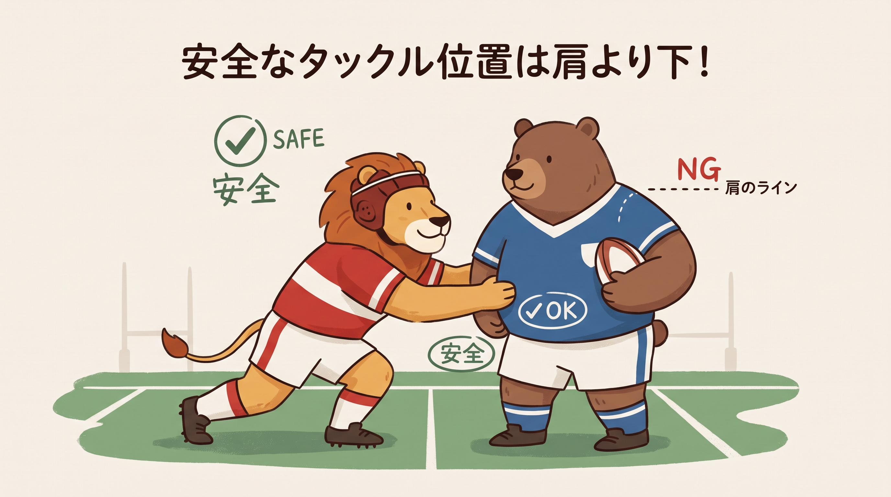

1. これだけは覚えたいルール
ラグビーのルールは複雑だと思われがちですが、実はお子様にも分かりやすい「5つの大原則」で成り立っています。お父さんお母さんも、まずはこの5つだけ覚えてお子様の応援に行きましょう！
① スローフォワード（前に投げてはいけない）
ボールを「前」に投げてはいけない、ラグビー最大のお約束です。お友達にパスをするときは、必ず自分より「後ろ」にいる味方に投げなければいけません。前に進みたいのに後ろにしか投げられない、これがラグビーの面白いところです。
② ノックオン（前に落としてはいけない）
ボールをキャッチしそこねて「前」に落としてしまうミスです。ラグビーボールは持ちにくい形をしているのでよく起こります。ボールを前に落とすと相手ボールになり、「スクラム（両チームが押し合う陣形）」で試合再開となります。
③ オフサイド（待ち伏せしてはいけない）
ボールより「前」で待ち伏せして、プレーに参加してはいけないというルールです。ラグビーは「ボールより後ろのポジションから攻める」のが鉄則。こっそり前の方に隠れていて、いきなりタックルするようなズルは許されません。
④ タックルの原則（ボールを持った人にしかぶつかれない）
激しくぶつかり合うラグビーですが、タックルしていいのは「今ボールを持っている選手」だけです。ボールを持っていない選手を突き飛ばしたり、進路を邪魔したりすると反則になります。とても紳士的なルールなのです。
⑤ アドバンテージ（反則があってもすぐに止めない）
相手が反則をしたとき、審判がすぐに笛を吹かずに「プレー続行」させることがあります。これは「反則された側に有利（チャンス）な状態」だからです。もしチャンスにならなければ、審判は笛を吹いて反則があった場所まで戻してくれます。
2. 危険なプレーとペナルティ
ラグビーは生身でぶつかり合うスポーツです。一歩間違えれば、選手生命を絶たれるだけでなく、一生消えない後遺症や、最悪の場合は命に関わる大事故に直結します。だからこそ、子供たちを守るために極めて厳格なルールが存在します。「これくらい平気」という油断が、重大な事故を引き起こすことを保護者も肝に銘じてください。

安全なタックル位置は「みぞおちより下」。首や頭への衝撃は絶対に避ける。
| 反則名 | 危険度 | 起こりうる重大な怪我 | 想定される後遺症・離脱期間 |
|---|---|---|---|
| スピアタックル（危険な投げ落とし） 相手を持ち上げ、頭や首から地面に突き落とす |
致命的 | 頸椎骨折、脊髄損傷、頭蓋骨骨折 | 全身麻痺、最悪の場合は死亡。一発レッドカード（退場） |
| タックル・イン・ジ・エアー 空中でボールを捕ろうとジャンプしている無防備な選手へのタックル |
致命的 | 頸髄損傷、複雑骨折、重度の脳震盪 | 半身不随、選手生命の喪失。一発レッドカード |
| ハイタックル 肩のラインより上（首や頭）へのタックル |
極めて高 | 重度の脳震盪、むち打ち、顔面陥没骨折 | 記憶障害、言語障害、数ヶ月〜1年以上の離脱 |
| ネックロール 密集の中で相手の首を腕で巻き込み、ねじり倒す行為 |
極めて高 | 頸動脈損傷、頸椎脱臼、神経断裂 | 生涯にわたる首の痛み、数ヶ月以上の離脱 |
| 危険なクリーンアウト 密集に無防備な角度で猛スピードで突進し、肩や頭をぶつける |
高 | 脳震盪、肩鎖関節脱臼、肋骨多発骨折 | 内臓破裂のリスク。数ヶ月の離脱 |
| レイトチャージ ボールをパスしたりキックした直後の、完全に力を抜いている選手へのタックル |
高 | 膝関節靭帯断裂、腰椎骨折 | 手術および1年近いリハビリ。イエローカード |
| ノーバインドタックル（ショルダーチャージ） 腕で相手を抱き込まず、肩からロケットのように突っ込む |
中〜高 | 肩の脱臼、胸骨骨折、重度の打撲 | 自分自身も大怪我をする危険性。数週間〜数ヶ月の離脱 |
3. 間違えやすいルールを比較解説
ラグビーの試合を見ていると、「えっ、今どっちの反則？」と混乱することがよくあります。ここでは、見た目が似ていて間違いやすいルールを4組ピックアップし、何が違うのかを比較解説します。
ノット・リリース・ザ・ボール
どういう反則？：タックルされて地面に倒されたのに、ボールをギュッと抱え込んで手放さない反則です。
なぜ反則？：倒れたらすぐにボールを地面に置くか、味方にパスしないと、試合が止まってしまうからです。
ノット・ロール・アウェイ
どういう反則？：タックルをして相手を倒した後、相手の上に乗ったまま、またはボールのそばからゴロゴロと転がってどかない反則です。
なぜ反則？：そこに居座ると、相手チームがボールを取り出す邪魔になるからです。倒したらすぐその場を離れなければなりません。
スローフォワード
どういう反則？：味方へパスを投げる時に、自分より前方にボールを投げてしまう反則です。
間違えやすいポイント：「投げる動作」そのものが前に向かっている場合に取られます。
ノックオン
どういう反則？：パスを受け損ねたり、タックルされて手からボールがこぼれた時、ボールが自分より前方に落ちてバウンドする反則です。
間違えやすいポイント：「意図せず前に落としてしまった」というキャッチミス等の結果に対して取られます。
ペナルティキック (PK)
どんな時に起こる？：オフサイドや危険なタックル、故意の反則など、悪質なプレーがあった時です。
どうなる？：相手チームは「ゴールを狙って蹴る（3点入る）」「遠くまで蹴り出して陣地を進める」など、非常に有利な選択ができます。審判は手を斜め上にまっすぐ挙げます。
フリーキック (FK)
どんな時に起こる？：スクラムの組み間違いや、ラインアウトの遅延など、ちょっとしたルール違反の時です。
どうなる？：ペナルティキックと違い、直接ゴールを狙って蹴ることはできません。ちょんと蹴ってすぐ攻め始めることが多いです。審判は腕を直角（L字）に曲げて挙げます。
イエローカード（シンビン）
どんな罰？：危険なプレーや、意図的な反則を繰り返した場合に出されます。選手はピッチの外（シンビン席）に座らされ、10分間試合に戻れません。
試合への影響：その間、チームは1人少ない14人で戦わなければならず、大ピンチを迎えます。
レッドカード
どんな罰？：相手の命に関わるような極めて危険な反則（頭部への激しいタックルなど）をした場合に一発で出されます。また、イエローカードを1試合に2枚もらった場合もレッドになります。
試合への影響：その選手は試合終了まで戻れず、代わりの選手を入れることもできません。残りの時間をずっと14人で戦うという絶望的な状況になります。
4. まとめ
ラグビーのルールは一見難解ですが、「ボールを前に落とさない・投げない」「ボールを持った人にしかタックルできない」「危険なプレーは絶対ダメ」という本質を理解すれば、試合の流れがグッと掴みやすくなります。選手の安全を守るための厳しいルールと、子供でもわかるシンプルな大原則。まずはこのページで紹介した内容を片手に、実際の試合観戦を楽しんでみてください！